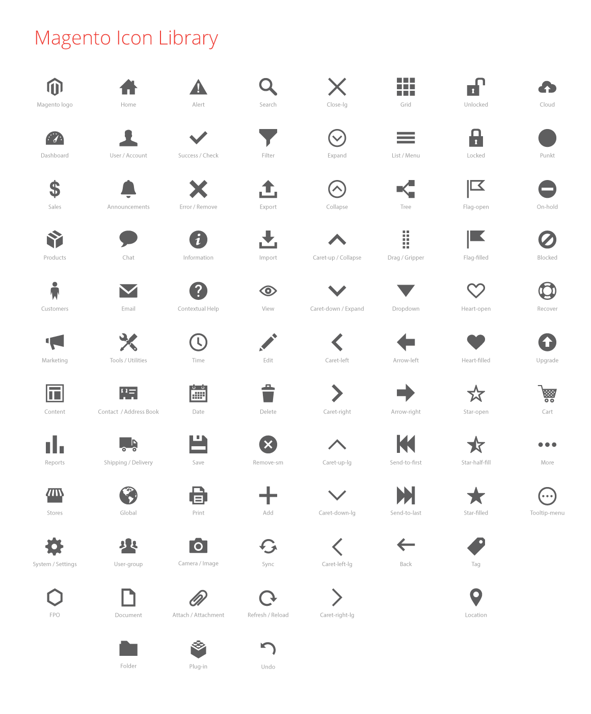
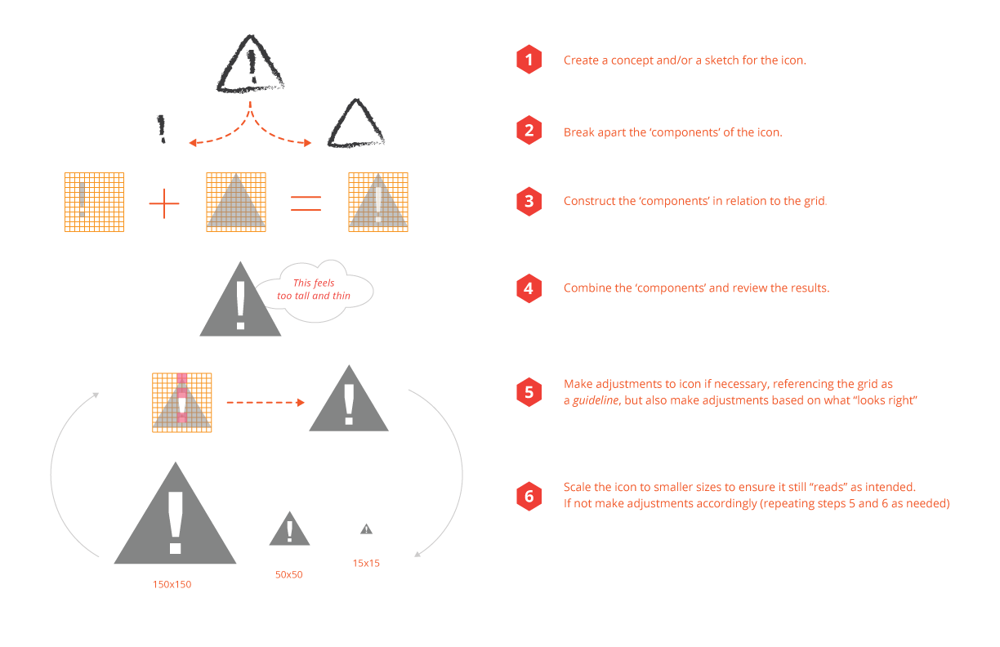

Iconography in Admin Pattern Library
Icons are used throughout the Admin interface, often as a controls to initiate a function (such as “Filter”), or to direct the user to section (such as “Account”).
Icons are meant to provide a visual representation of functionality or content and should therefore bear some conceptual resemblance to them. Icons should be able to communicate their “use” to the user without the assistance of a text label, though labels should be used in the UI whenever possible to minimize ambiguity.
How icons are used
Icons may appear in a variety of sizes within the interface as controls for tools and functions and to assist in “way-finding” within the application. Principles of a “Touch-Friendly” UI should be observed; icons should be large enough to provide a reasonable “touch-target” for the user. The icon may be scaled at something less than this optimal size when coupled with a “target” area that provides this optimal size, such as an expand control used where the entire header row is clickable/tappable.
The functionality associated with a particular icon should be used consistent throughout the application.
Typically icons should represent a single, unique concept and be used consistently in the UI. However some icons have a dual purpose and rely on size, placement and context to communicate their meaning to the user. The “Error” icon is an example of this. When used in an “Alert”, the supporting elements of copy, position, etc. help provide meaning. This same icon can also be used as a remove or close control, and size, color, position and context differentiate its’ use for the user.
Icon Library
In the Magento Admin UI icons have a simple, flat, single-color, 2D, style. This style prevents the loss of detail at smaller sizes and makes the shapes easier to comprehend.
Download Icon Library .ai file Download Icon Library Sketch file

Creating Icons
Rules
- Icons should be designed on the 300px by 300px icon grid. Download Icon Grid .ai file
- Icons should be monochromatic.
- Icons should look like they are part of the “family” of icons.
- Line weights should be consistent with other icons in the library.
- Elements within the icon should be consistent with these elements icons in the library (i.e. “Arrows”).
- Cantered or rotated elements should observe a 45 degree angle.
- A limited perspective should be used.
Any icon that is intended for general use in the UI should be submitted to the Magento Product Team for review and inclusion to the ‘icon font’.
Guides
Here is a guide to help you get started creating your own icon:

How to use the icon grid:

Icon Fonts
We recommend using icon fonts to get the best quality for your icons. The Magento icon fonts can be found in app/design/adminhtml/Magento/backend/web/fonts/admin-icons
If you want to add your own icons, each icon will need to be in its own SVG files. There are multiple ways to create icon fonts, here is one to get started:
-
Go to https://icomoon.io/app/ or download this app in Chrome web store.
-
Upload your icons in SVG format into the app.
-
Specify desired font names and specify the Unicode characters to map the icons. Setting the icons to Private User Area will disable screen-readers or other accessibility tools to read your icon’s characters (read “Unicode” section here).
-
Then initialize a download in the app to generate the icon font and CSS style sheet.
Accessibility
Efforts should be made to optimize icons and/or icon fonts for assistive technology.
Use “aria-hidden” attribute: Modern versions of assistive technologies will announce CSS generated content, as well as specific Unicode characters. To avoid unintended and confusing output in screen readers hide them with the aria-hidden=”true” attribute.
From: https://getbootstrap.com/docs/5.2/components/accordion/
Example of “aria-hidden” attribute
1
2
3
4
5
<style>
.icon-star:before { content: "★ "; }
</style>
<span><span class="icon-star" aria-hidden="true"></span>Favorite</span>
From: https://www.filamentgroup.com/lab/bulletproof_icon_fonts.html
How to make your icon font accessible in three easy steps
Icons, if in fonts or not, should be very descriptive, especially if they stand on their own. If in doubt, add a descriptive text so users can find out what it means. (In the pre-touch era of web design I’d just have recommended a `title attribute, but those times are over.)
- Don’t ever use “regular letters” for icons. Use a service like Icomoon and use the private use area (PUA) of the font. Those areas are specifically made for this usage and don’t have any letters attached to it. Screen readers won’t read letters in the PUA.
- Use colors with enough contrast for your icons.
- Never use an icon without a text (that you may hide). As icons are not read out, we don’t have any hint for a screen reader user what actually is on the screen, an alternative text is important as long as the content doesn’t make sense without an icon at all.